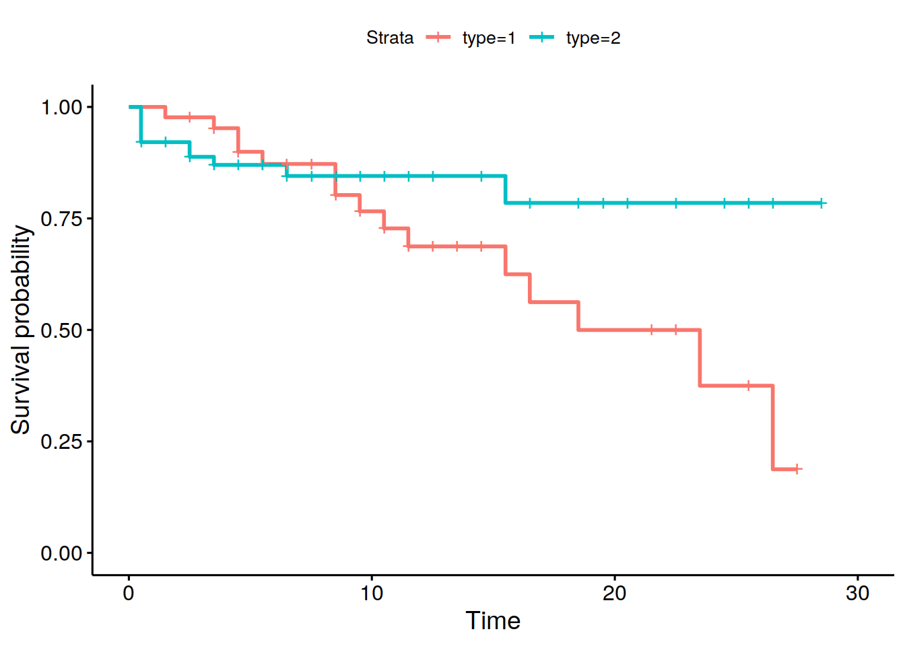
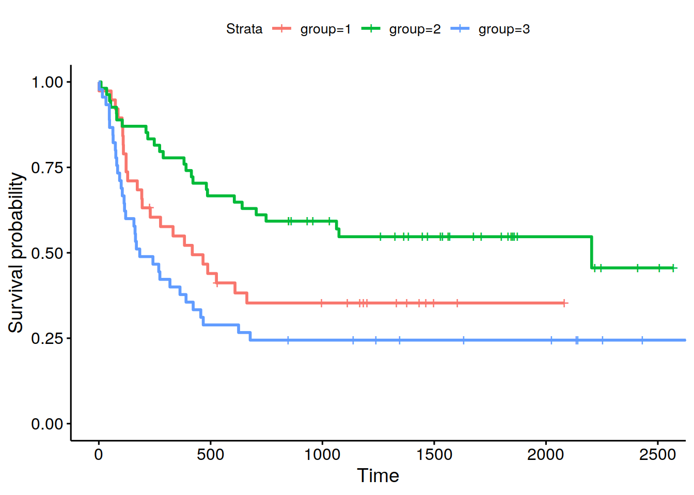

library(survival)
library(KMsurv)
library(survMisc)
library(tidyverse)3 Pruebas de Hipótesis
3.1 Pruebas de Hipótesis de una muestra
Supongamos una muestra con censura de tamaño \(n\). Se quiere probar las siguientes hipótesis:
- \(H_0:\) La tasa de riesgo de la población es \(h_0(t)\) para todo \(t \leq \tau\).
- \(H_1:\) La tasa de riesgo de la población es distinta a \(h_0(t)\) para algún \(t \leq \tau\).
Donde \(h_0(t)\) es una tasa de riesgo conocida en \([0,\tau]\) y \(\tau\): máximo de los tiempo de estudio observados.
Considere el estimador de Nelson-Aalen de \(H(t)\):
\[\hat H(t)=\sum_{t_i\leq t}\frac{d_i}{Y(t_i)}\] donde \(d_i:\) número de eventos en los tiempos observados \(t_1<t_2<\cdots < t_D\) y \(Y(t_i)\): número de individuos en riesgo al tiempo \(t_i\). Un estimador (muy crudo) de \(h(t_i)\) es
\[\frac{d_i}{Y(t_i)}\]
y este estadístico nos permite definir un estadístico de prueba que busca comparar las tasas de riesgo observadas y esperadas usado diferencias ponderadas. Sea \(W(t)\): función de pesos tal que \(W(t)=0\) si \(Y(t)=0\). Defina el siguiente estadístico de prueba:
\[Z(\tau)=O(\tau)-E(\tau)=\sum_{i=1}^DW(t_i)\frac{d_i}{Y(t_i)}-\int_0^\tau W(s)h_0(s)ds\] Bajo \(H_0\), la varianza de \(Z(\tau)\) es:
\[V[Z(\tau)]=\int_0^\tau W^2(s)\frac{h_0(s)}{Y(s)}ds\] Si \(n\) es grande:
\[\frac{Z(\tau)^2}{V[Z(\tau)]}\underset{H_0}{\sim}\chi_1^2\] Por lo tanto se rechaza \(H_0\) si \(\frac{Z(\tau)^2}{V[Z(\tau)]}>\chi_{1,1-\alpha}^2\) bajo un nivel de significancia de \(\alpha\).
Si se quiere probar \(H_0: h(t)>h_0(t)\) entonces se rechaza \(H_0\) si:
\[\frac{Z(\tau)}{\sqrt{V[Z(\tau)]}}>z_{1-\alpha}\] con nivel \(\alpha\). La función de pesos se puede seleccionar de muchas formas, por ejemplo la forma más usual es (Gehan):
\[W(t)=Y(t)\] con lo cual se genera una prueba de rango (Prueba de bondad de ajuste no-paramétrica). Otros casos: (Harrington-Fleming):
\[W(t)=Y(t)S_0(t)^p[1-S_0(t)]^q, \qquad p,q\geq 0\] y \(S_0(t)=\exp[-H_0(t)]\).
En el caso de truncamiento por la izquierda, sea:
- \(T_j\): tiempo de ocurrencia del evento en el \(j\)-ésimo paciente.
- \(L_j\): tiempo de truncamiento por la izquierda en el \(j\)-ésimo paciente. Este tiempo se puede interpretar como el momento de entrada en el estudio.
Si se usa la opción \(W(t)=Y(t)\), entonces:
\[O(\tau)=\sum_{i=1}^D d_i\]
y
\[E(\tau)=\int_0^\tau Y(s)h_0(s)ds = V[Z(\tau)]=\sum_{j=1}^n H_0(T_j)-H_0(L_j)\]
3.2 Pruebas de Hipótesis para más de una muestra
Queremos probar las siguientes alternativas:
- \(H_0: h_1(t)=h_2(t)=\cdots=h_k(t)\) para todo \(t\leq \tau\)
- \(H_1\): al menos uno de los \(h_j(t)\) es diferente para algún \(t\leq \tau\).
Sea \(\tau\): tiempo máximo en donde todos los grupos tienen al menos un individuo en riesgo. Normalmente \(\tau=\min_k \{\max \{ \text{tiempos de estudio}\}\}\).
Los datos en este caso constituyen muestras independientes de datos censurados, truncados por la izquierda para cada una de las \(k\) poblaciones. Sea \(t_1<t_2<\cdots <t_D\) los distintos tiempos de ocurrencia del evento de interés en la muestra combinada.
En tiempo \(t_i\) se observa \(d_{ij}\) eventos en la \(j\)-ésima muestra con \(Y_{ij}\): individuos en riesgo de la población \(j\)-ésima (\(j=1,\ldots,k\), \(i=1,\ldots,D\)).
Además:
\[d_i=\sum_{j=1}^k d_{ij}\qquad \text{y} \qquad Y_i=\sum_{j=1}^k Y_{ij}\] Si \(H_0\) es cierto, un estimador de la tasa de riesgo para la población \(j\)-ésima es el estimador combinado:
\[\frac{d_i}{Y_i}\]
Si \(W_j(t_i)\) denota una función de pesos tal que es cero si \(Y_{ij}=0\), entonces defina el estadístico:
\[Z_j(\tau)=\sum_{j=1}^D W_j(t_i)\left[\frac{d_{ij}}{Y_{ij}}-\frac{d_i}{Y_i}\right]\] Interpretación del estadístico \(Z_j(\tau)\): valores altos dan evidencia de que \(H_0\) no es cierto.
En general, se simplifica la ponderación de \(Z_j\) al escoger:
\[W_j(t_i)=Y_{ij}W(t_i)\] en donde \(W(t_i)\) es un peso en común para toda la muestra combinada. En este caso la diferencia ponderada quedaría:
\[Z_j(\tau)=\sum_{i=1}^D W(t_i)\left[d_{ij}-\underbrace{Y_{ij}\left(\frac{d_i}{Y_i}\right)}_{**}\right]\] donde \(**\) es el número de eventos esperados bajo \(H_0\). La varianza de \(Z_j(\tau)\) es:
\[\hat \sigma_{jj}=\sum_{i=1}^D W(t_i)^2\frac{Y_{ij}}{Y_i}\left(1-\frac{Y_{ij}}{Y_i}\right)\left(\frac{Y_i-d_i}{Y_i-1}\right)d_i\] para \(j=1,\ldots,k\). La covarianza entre \(Z_j(\tau)\) y \(Z_g(\tau)\) es:
\[\hat \sigma_{jg}=-\sum_{i=1}^D W(t_i)^2\frac{Y_{ij}}{Y_i}\frac{Y_{ig}}{Y_i}\left(\frac{Y_i-d_i}{Y_i-1}\right)d_i\] El término \(\frac{Y_i-d_i}{Y_i-1}\) es igual a 1 si no hay individuos que tengan un tiempo en común de ocurrencia del evento, por lo tanto se puede considerar este término como un factor de correción a la estructura de varianza ante la presencia de múltiples ocurrencias en un mismo tiempo (ties).
Note que \((Z_1(\tau),\ldots,Z_k(\tau))\) cumple que:
\[\sum_{j=1}^k Z_j(\tau)=0\]
Seleccionamos entonces \(k-1\) de las poblaciones y sea \(\Sigma\) la matriz de varianza-covarianza con elementos \(\hat \sigma_{jg}\). Se define el estadístico:
\[\chi^2=(Z_1(\tau),\ldots,Z_{k-1}(\tau))\Sigma^{-1}(Z_1(\tau),\ldots,Z_{k-1}(\tau))^T\]
Bajo \(H_0\) se tiene que \(\chi^2\sim \chi_{k-1}^2\). En el caso en que \(k=2\):
\[\begin{align*} Z&=\frac{\sum_{i=1}^D W(t_i)\left[d_{i1}-Y_{i1}\left(\frac{d_i}{Y_i}\right)\right]}{\sqrt{\sum_{i=1}^D W(t_i)^2\frac{Y_{i1}}{Y_i}\left(1-\frac{Y_{i1}}{Y_i}\right)\left(\frac{Y_i-d_i}{Y_i-1}\right)}}\\ &\underset{H_0}{\sim} N(0,1) \end{align*}\]Por lo tanto se rechaza \(H_0: h_1(t)=h_2(t)\) si \(|Z|>z_{1-\alpha/2}\) o se rechaza \(H_0: h_1(t)>h_2(t)\) si \(Z>z_{1-\alpha}\).
Escogencias de \(W(t)\):
1- \(W(t)=1\): Prueba de log-rango.
2- \(W(t_i)=Y_i\): similar a la prueba de Wilcoxon-Mann-Whitney.
3- \(W(t_i)=Y_i^{1/2}\) (otorga más peso donde hay más datos).
4- Considere
\[\tilde S(t)=\prod_{t_i\leq t}\left(1-\frac{d_i}{Y_i+1}\right)\] tome \(W(t_i)=\tilde S(t_i)\) (Peto-Peto, (1972)).
5- Modificación de Andersen (1982) (Peto-Peto Modificada)
\[W(t_i)=\frac{\tilde S(t_i)Y_i}{Y_i+1}\] 6- Fleming and Harrington
Sea \(\hat S(t)\) el estimador de Kaplan-Meier usando la muestra combinada. Defina:
\[W_{p,q}(t_i)=\hat S(t_{i-1})^p[1-\hat S(t_{i-1})]^q, \qquad p\geq 0, q\geq 0\]
2 casos: \(p=q=0\) (log-rango) y \(p=1, q=0\) (Mann-Whitney-Wilcoxon)
3.3 Pruebas de tendencia
Principal objetivo: detectar alternativas ordenadas a la hipótesis nula:
- \(H_0:h_1(t)=h_2(t)=\cdots=h_k(t)\) para todo \(t\leq \tau\)
- \(H_1: h_1(t)\leq h_2(t)\leq \cdots\leq h_k(t)\) para \(t\leq \tau\) con al menos una desigualdad estricta.
Note que
\[h_1(t)\leq \cdots \leq h_k(t) \Leftrightarrow S_1(t)\geq \cdots \geq S_k(t)\] Usando la notación anterior, sea \(a_1<a_2<\cdots <a_k\) una secuencia de scores (usualmente \(a_j=j\) o algún estadístico representativo para la población \(j\)-ésima):
\[Z=\frac{\sum_{j=1}^k a_jZ_j(\tau)}{\sqrt{\sum_{j=1}^k \sum_{g=1}^k a_ja_g\hat \sigma_{jg}}}\underset{H_0}{\sim} N(0,1)\]
3.4 Pruebas estratificadas
Suponga que se tiene un conjunto de covariables que definen \(M\) estados o configuraciones sobre el conjunto de \(k\) poblaciones. Se quiere probar:
\[H_0: h_{1s}(t)=h_{2s}(t)=\cdots=h_{ks}(t), \qquad s=1,\ldots,M\qquad t<\tau\] Para un estrato \(s\) fijo, sea \(Z_{js}(\tau)\):
\[Z_{js}(\tau)=\sum_{i=1}^DW(t_i)\left[\underbrace{d_{ij}-Y_{ij}\left(\frac{d_i}{Y_i}\right)}_{\text{solamente estrato s}}\right]\]
y \(\hat \Sigma_s\) es la matriz de varianza-covarianza de \(Z_{js}\). La prueba estratificada se construye definiendo:
\[Z_{j.}(\tau)=\sum_{s=1}^MZ_{js}(\tau) \qquad \text{y} \qquad \hat \sigma_{jg.}=\sum_{s=1}^M \hat \sigma_{jgs}\]
y \(\hat \sigma_{jgs}\) es la entrada \(jg\) del \(\hat \Sigma_s\). El estadístico de prueba estaría dado por:
\[X_.=(Z_{1.}(\tau),\ldots,Z_{k-1,.}(\tau))\Sigma_.^{-1}(Z_{1.}(\tau),\ldots,Z_{k-1,.}(\tau))^T\]
donde \(\Sigma_.\) es la matriz con entradas \(\hat \sigma_{jg.}\). Bajo \(H_0\):
\[X_.\sim \chi_{k-1}^2\]
En el caso de dos muestras el estadístico se puede escribir:
\[\frac{\sum_{s=1}^M Z_{1s}(\tau)}{\sqrt{\sum_{s=1}^M \hat \sigma_{11s}}}\underset{H_0}{\sim}N(0,1)\] y este estadístico también permite probar hipótesis de una cola en el caso de dos muestras.
Otro tipo de prueba basada en pruebas estratificadas es una prueba pareada. Si \((T_{1i},T_{2i})\) son pares de eventos de interés con indicadores de eventos \((\delta_{1i},\delta_{2i})\) para \(i=1,\ldots,M\). Queremos probar las hipótesis:
\[H_0: h_{1i}(t)=h_{2i}(t), \qquad i=1,\ldots,M\] (misma interpretación en términos de estratos). En este caso el estadístico \(Z_{js}\) es: (\(j=1,2\))
\[\begin{align*} Z_{1i}(\tau)= \begin{cases} W(T_{1i})\left(1-\frac 1 2\right)=\frac{W(T_{1i})}{2} & \text{bajo Escenario A}\\ W(T_{2i})\left(0-\frac 1 2\right)=-\frac{W(T_{2i})}{2} & \text{bajo Escenario B}\\ 0 & \text{otro caso} \end{cases} \end{align*}\]- Escenario A: si \(T_{1i}<T_{2i}\), \(\delta_{1i}=1\) o \(T_{1i}=T_{2i}\), \(\delta_{1i}=1\), \(\delta_{2i}=0\).
- Escenario B: \(T_{2i}<T_{1i}\), \(\delta_{2i}=1\) o \(T_{1i}=T_{2i}\), \(\delta_{2i}=1\), \(\delta_{1i}=0\).
y
\[\begin{align*} \hat \sigma_{11i}= \begin{cases} W(T_{1i})^2/4 & \text{bajo Escenario A}\\ W(T_{2i})^2/4 & \text{bajo Escenario B}\\ 0 & \text{otro caso} \end{cases} \end{align*}\]Sumando sobre los estratos (\(i=1,\ldots,M\)):
\[Z_{1.}(\tau)=w \cdot \frac{D_1-D_2}{2}\] y
\[\hat \sigma_{11.}=w^2\cdot \frac{D_1+D_2}{4}\] donde:
- \(D_1\): número de parejas en donde el evento aparece en el sujeto de la primera muestra.
- \(D_2\): número de parejas en donde el evento aparece en el sujeto de la segunda muestra.
- \(w\): peso evaluado en el tiempo más pequeño de ocurrencia del evento.
Entonces:
\[\frac{Z_{1.}(\tau)}{\sqrt{\hat \sigma_{11.}}}=\frac{D_1-D_2}{\sqrt{D_1+D_2}}\underset{H_0}{\sim}N(0,1)\]
3.5 Pruebas de Renyi
Inconveniente de las pruebas anteriores: algunas veces las diferencias en las tasas de riesgo son simétricas (un primer grupo sobrepasa al otro en riesgo un número similar de veces al que el primer grupo es sobrepasado por el otro grupo). Esto provoca problemas de potencia en la prueba. Solución: utilizar otras medidas de comparación.
Suponga que se tiene dos muestras independientes de tamaño \(n_1\) y \(n_2\) respectivamente.
Sea \(n=n_1+n_2\) y \(t_1<t_2<\cdots<t_D\) los distintos tiempo de ocurrencia en la muestra combinada y \(Y_{ij}\): número de individuos en riesgo en tiempo \(t_i\) (\(j=1,2\)). Al igual que antes \(Y_i=Y_{i1}+Y_{i2}\), \(d_i=d_{i1}+d_{i2}\) (eventos ocurridos). Sea \(W(t)\) la función de pesos (como las consideradas anteriormente). En este caso se calcula:
\[Z(t_i)=\sum_{t_k\leq t_i}W(t_k)\left[d_{k1}-Y_{k1}\left(\frac{d_k}{Y_k}\right)\right]\qquad i=1,\ldots,D\] y
\[\sigma(\tau)=\sum_{t_k\leq \tau}W(t_k)^2\left(\frac{Y_{k1}}{Y_k}\right)\left(\frac{Y_{k2}}{Y_k}\right)\left(\frac{Y_{k}-d_k}{Y_k-1}\right)d_k\] donde \(\tau\) es el \(t_k\) máximo tal que \(Y_{k1}, Y_{k2}>0\).
Bajo la hipótesis:
- \(H_0: h_1(t)=h_2(t),\qquad t<\tau\)
- \(H_1: h_1(t)\neq h_2(t)\)
el estadístico de prueba es:
\[Q=\sup_{t\leq \tau}\frac{|Z(t)|}{\sigma(\tau)}\] cuya distribución bajo \(H_0\) se aproxima con la distribución de \(\sup_{0\leq x\leq 1}|B(x)|\) donde \(B\) es un proceso Browniano estándar.
3.6 Pruebas en un punto fijo en el tiempo
Objetivo: hacer comparaciones de funciones de sobrevivencia o curvas de incidencia de \(k\) poblaciones en un punto fijo en el tiempo \(t_0\).
Sea \(\Theta^T=(\theta_1,\ldots,\theta_p)\) un vector de parámetros de dimensión \(p\). Definimos un contraste como un conjunto de coeficientes \(c=(c_1,\ldots,c_p)\) que definen una combinación lineal de parámetros \(\theta^c=c\Theta=c_1\theta_1+\cdots+c_p\theta_p\).
Ejemplo: si \(p=3\) y \(c=(1,-1,0)\), entonces \(\theta^c=\theta_1-\theta_2\). Decir que \(H_0: \theta^c=0\) es equivalente a decir que \(H_0:\theta_1=\theta_2\).
Suponga que se tiene \(q\) contrastes \(c_k=(c_{k1},\ldots,c_{kp})\) para \(k=1,\ldots,q\) y se tiene que probar las hipótesis:
\[H_0: c_k\Theta=0\qquad \forall k\] Defina la matriz de contrastes:
\[\begin{align*} C= \begin{pmatrix} c_1\\ \vdots \\ c_q \end{pmatrix} \end{align*}\]Si \(\hat \theta_j\) es el estimador de \(\theta_j\) con matriz de varianza \(V\) (con entradas \(\hat V(\hat \theta_j,\hat \theta_k)\)) (\(V\): varianza). Entonces si se quiere probar:
\[H_0: C\Theta^T=0\]
El estadístico de prueba es:
\[X^2=[C\Theta]^T[CVC^T]^{-1}[C\Theta]\underset{H_0}{\sim}\chi_q^2\] Caso particular:
- \(H_0: S_1(t_0)=S_2(t_0)=\cdots S_k(t_0)\) vs \(H_1\): al menos uno de los \(S_j(t_0)\) es distinto.
- \(H_0: CI_1(t_0)=CI_2(t_0)=\cdots =CI_k(t_0)\) vs \(H_1\): al menos uno de los \(CI_j(t_0)\) es distinto.
Sea \(\hat \theta_j\) el estimador de Kaplan-Meier de \(S_j(t_0)\) o la curva de incidencia estimada en \(t_0\). Sea
\[\begin{align*} C= \begin{pmatrix} 1 & 0 & 0 & \cdots & 0 & -1 \\ 0 & 1 & 0 & \cdots & 0 & -1 \\ \vdots & \vdots & \vdots & \vdots & \vdots & \vdots \\ 0 & 0 & 0 & \cdots & 1 & -1 \end{pmatrix} \end{align*}\]y \(V=\text{diag}(\hat V(\hat \theta_k(t_0)))\). Entonces:
\[\begin{align*} X^2&= \begin{pmatrix} \hat \theta_1-\hat \theta_p\\ \vdots\\ \hat \theta_{p-1}-\hat \theta_p \end{pmatrix}^T \begin{pmatrix} V_1+V_p & V_p & \cdots & V_p \\ V_p & V_2+V_p & \cdots & V_p \\ \vdots & \vdots & \vdots & \vdots \\ V_p & V_p & \cdots & V_{p-1}+V_p \end{pmatrix}^{-1} \begin{pmatrix} \hat \theta_1-\hat \theta_p\\ \vdots\\ \hat \theta_{p-1}-\hat \theta_p \end{pmatrix}\\ & \underset{H_0}{\sim} \chi_{p-1}^2 \end{align*}\]Caso particular (p=2):
Con la hipótesis nula \(H_0: S_1(t_0)=S_2(t_0)\):
\[Z=\frac{\hat S_1(t_0)-\hat S_2(t_0)}{\sqrt{\hat V(\hat S_1(t_0))+\hat V(\hat S_2(t_0))}}\underset{H_0}{\sim}N(0,1)\] Nota: Si se quiere hacer comparaciones simultáneas (\(k\) en total, 2 a 2) se puede usar un factor de corrección de Bonferroni (Ejercicio).
3.7 Laboratorio
3.7.1 Prueba de una muestra
Carga de paquetes básicos:
Este cálculo busca replicar el ejemplo 7.1 en donde se compara la mortalidad en una muestra de 26 pacientes psiquiátricos en Iowa con respecto a la mortalidad general de la población del mismo estado en el año 1960. Primero cargamos los datos:
data("psych")
head(psych) sex age time death
1 2 51 1 1
2 2 58 1 1
3 2 55 2 1
4 2 28 22 1
5 1 21 30 0
6 1 19 28 1y cargamos la información de la mortalidad de todo Iowa (1:Hombres, 2:Mujeres):
Iowa_mort <- read_csv('Iowa_1960.csv')Rows: 60 Columns: 3
── Column specification ────────────────────────────────────────────────────────
Delimiter: ","
dbl (3): Age, Survival_males, Survival_females
ℹ Use `spec()` to retrieve the full column specification for this data.
ℹ Specify the column types or set `show_col_types = FALSE` to quiet this message.colnames(Iowa_mort) <- c('age','1','2')
head(Iowa_mort)# A tibble: 6 × 3
age `1` `2`
<dbl> <dbl> <dbl>
1 18 0.964 0.974
2 19 0.962 0.973
3 20 0.961 0.973
4 21 0.959 0.972
5 22 0.957 0.972
6 23 0.956 0.971Después de algunos cambios, unimos las dos fuentes de información:
Iowa_mort <- Iowa_mort %>%
pivot_longer(-age,names_to = 'sex',values_to = 'Survival') %>%
mutate(sex=as.numeric(sex))
psych <- psych %>% left_join(Iowa_mort) %>% mutate(age2=age+time)Joining with `by = join_by(sex, age)`head(psych) sex age time death Survival age2
1 2 51 1 1 0.92756 52
2 2 58 1 1 0.89304 59
3 2 55 2 1 0.90942 57
4 2 28 22 1 0.96805 50
5 1 21 30 0 0.95919 51
6 1 19 28 1 0.96246 47Se maneja dos distintas situaciones bajo estos datos censurados por la derecha: (1) truncamiento por la izquierda o (2) ningún truncamiento:
attach(psych)
surv_7_1 <- Surv(time = age,time2 = age2,event = death,type = 'counting')
surv_7_1_b <- Surv(time = age2,event = death)Si queremos comparar las dos distribuciones sin asumir truncamiento por la izquierda se puede ejecutar:
S_7_1_b <- survdiff(surv_7_1_b~offset(Survival))
S_7_1_bCall:
survdiff(formula = surv_7_1_b ~ offset(Survival))
Observed Expected Z p
1.40e+01 1.40e+00 -1.06e+01 1.89e-26 En donde concluimos que la mortalidad de los pacientes es distinta a la resto del estado bajo los niveles de significancia usuales. En el caso de truncamiento por la izquierda, hacemos el cálculo de manera directa:
psych <- psych %>% mutate(H=-log(Survival))
Iowa_mort <- Iowa_mort %>% select(age2=age,sex,Survival2=Survival)
psych <- psych %>% left_join(Iowa_mort) %>%
mutate(H2=-log(Survival2)) %>%
mutate(dif=H2-H)Joining with `by = join_by(sex, age2)`Otau <- sum(psych$death)
Etau <- sum(psych$dif)
X2 <- (Otau-Etau)^2/Etau
valor_p <- pchisq(q = X2,df = 1,lower.tail = F)
show(valor_p)[1] 1.014724e-05detach(psych)Por lo que llegamos a la misma conclusión.
3.7.2 Prueba de dos muestras
El primer conjunto de datos mide la efectividad de dos técnicas distintas de colocación de catéteres en procedimientos de diálisis en riñones.
data("kidney")
head(kidney) time delta type
1 1.5 1 1
2 3.5 1 1
3 4.5 1 1
4 4.5 1 1
5 5.5 1 1
6 8.5 1 1Primero estimamos las funciones de sobrevivencia según Kaplan-Meier:
attach(kidney)
library(survminer)Loading required package: ggpubr
Attaching package: 'survminer'The following object is masked from 'package:survival':
myelomasurv_7_2 <- Surv(time,event = delta)
S_7_2 <- survfit(surv_7_2~type,data = kidney)
ggsurvplot(S_7_2)
Y comparamos las tasas de riesgo bajo los dos procedimientos bajo distintas escogencias de funciones de pesos \(W(t)\) (log-rank, Peto-Peto y tres posibilidades de escogencia de Fleming-Harrington):
X_7_2_logrank <- survdiff(surv_7_2~type,data = kidney,rho = 0)
X_7_2_logrankCall:
survdiff(formula = surv_7_2 ~ type, data = kidney, rho = 0)
N Observed Expected (O-E)^2/E (O-E)^2/V
type=1 43 15 11 1.42 2.53
type=2 76 11 15 1.05 2.53
Chisq= 2.5 on 1 degrees of freedom, p= 0.1 X_7_2_PetoPeto <- survdiff(surv_7_2~type,data = kidney,rho = 1)
X_7_2_PetoPetoCall:
survdiff(formula = surv_7_2 ~ type, data = kidney, rho = 1)
N Observed Expected (O-E)^2/E (O-E)^2/V
type=1 43 12.0 9.48 0.686 1.39
type=2 76 10.4 12.98 0.501 1.39
Chisq= 1.4 on 1 degrees of freedom, p= 0.2 library(FHtest) # http://www.bioconductor.org/packages/release/bioc/html/Icens.htmlLoading required package: intervalLoading required package: permLoading required package: IcensLoading required package: MLEcensDepends on Icens package available on bioconductor.
To install use for example:
install.packages('BiocManager')
BiocManager::install('Icens')X_7_2_FH1 <- FHtestrcc(surv_7_2~type,data = kidney,rho = 0,lambda=1)
X_7_2_FH1
Two-sample test for right-censored data
Parameters: rho=0, lambda=1
Distribution: counting process approach
Data: surv_7_2 by type
N Observed Expected O-E (O-E)^2/E (O-E)^2/V
type=1 43 2.973 1.56 1.41 1.28 9.67
type=2 76 0.565 1.98 -1.41 1.01 9.67
Statistic Z= -3.1, p-value= 0.00188
Alternative hypothesis: survival functions not equalX_7_2_FH2 <- FHtestrcc(surv_7_2~type,data = kidney,rho = 1,lambda=0)
X_7_2_FH2
Two-sample test for right-censored data
Parameters: rho=1, lambda=0
Distribution: counting process approach
Data: surv_7_2 by type
N Observed Expected O-E (O-E)^2/E (O-E)^2/V
type=1 43 12.0 9.48 2.55 0.686 1.39
type=2 76 10.4 12.98 -2.55 0.501 1.39
Statistic Z= -1.2, p-value= 0.239
Alternative hypothesis: survival functions not equalX_7_2_FH3 <- FHtestrcc(surv_7_2~type,data = kidney,rho = 1,lambda=1)
X_7_2_FH3
Two-sample test for right-censored data
Parameters: rho=1, lambda=1
Distribution: counting process approach
Data: surv_7_2 by type
N Observed Expected O-E (O-E)^2/E (O-E)^2/V
type=1 43 2.21 1.19 1.02 0.875 9.83
type=2 76 0.48 1.50 -1.02 0.694 9.83
Statistic Z= -3.1, p-value= 0.00171
Alternative hypothesis: survival functions not equaldetach(kidney)Noten que bajo algunas escogencias de pesos no hay evidencia suficiente para rechazar la igualdad entre tasas de riesgos.
El ejemplo 7.3 del Klein busca comparar dos tasas de riesgo bajo un esquema de truncamiento por la izquierda. En este caso se usa los datos de la casa de retiro Channing, que anteriormente habíamos usado para comparar entre hombres y mujeres la sobrevivencia de adultos mayores. Ahora se busca probar \(H_0:h_F(t)=h_M(t)\) contra la alternativa de una cola \(H_A:h_F(t)\leq h_M(t)\).
data("channing")
head(channing) obs death ageentry age time gender
1 1 1 1042 1172 130 2
2 2 1 921 1040 119 2
3 3 1 885 1003 118 2
4 4 1 901 1018 117 2
5 5 1 808 932 124 2
6 6 1 915 1004 89 2attach(channing)
surv_7_3 <- Surv(time = ageentry,time2 = age,event = death,type = 'counting')Warning in Surv(time = ageentry, time2 = age, event = death, type =
"counting"): Stop time must be > start time, NA createdS_7_3 <- coxph(surv_7_3~gender)
summary(S_7_3)Call:
coxph(formula = surv_7_3 ~ gender)
n= 458, number of events= 176
(4 observations deleted due to missingness)
coef exp(coef) se(coef) z Pr(>|z|)
gender -0.3163 0.7289 0.1731 -1.827 0.0677 .
---
Signif. codes: 0 '***' 0.001 '**' 0.01 '*' 0.05 '.' 0.1 ' ' 1
exp(coef) exp(-coef) lower .95 upper .95
gender 0.7289 1.372 0.5191 1.023
Concordance= 0.528 (se = 0.018 )
Likelihood ratio test= 3.17 on 1 df, p=0.07
Wald test = 3.34 on 1 df, p=0.07
Score (logrank) test = 3.36 on 1 df, p=0.07En este caso el estadístico de prueba corresponde al de la prueba Score (3.36). Como la prueba es de una cola, el valor p se puede calcular directamente:
pnorm(sqrt(3.36),lower.tail = F)[1] 0.03339903detach(channing)Lo que da evidencia de que bajo un nivel de confianza en la muestra del 95%, podríamos rechazar la hipótesis de que las dos tasas de riesgo son idénticas a favor de que de las mujeres es mayor a la de los hombres.
El ejemplo 7.4 usa los datos de 137 pacientes que iban a someterse a un transplante de médula ósea bajo tres distintas condiciones de leucemia (ALL, AML-low, AML-high). Vamos a comparar la sobrevivencia de los pacientes bajo estos tres grupos de riesgo.
data("bmt")
head(bmt) group t1 t2 d1 d2 d3 ta da tc dc tp dp z1 z2 z3 z4 z5 z6 z7 z8 z9
1 1 2081 2081 0 0 0 67 1 121 1 13 1 26 33 1 0 1 1 98 0 1
2 1 1602 1602 0 0 0 1602 0 139 1 18 1 21 37 1 1 0 0 1720 0 1
3 1 1496 1496 0 0 0 1496 0 307 1 12 1 26 35 1 1 1 0 127 0 1
4 1 1462 1462 0 0 0 70 1 95 1 13 1 17 21 0 1 0 0 168 0 1
5 1 1433 1433 0 0 0 1433 0 236 1 12 1 32 36 1 1 1 1 93 0 1
6 1 1377 1377 0 0 0 1377 0 123 1 12 1 22 31 1 1 1 1 2187 0 1
z10
1 0
2 0
3 0
4 0
5 0
6 0Las funciones de sobrevivencia estimadas se grafican:
S_7_4 <- survfit(Surv(time=t2, event=d3) ~ group, data=bmt)
ggsurvplot(S_7_4)
y probamos la hipótesis de la igualdad de tasas de riesgo entre los tres grupos, usando tres posibilidades de escogencia de parámetros de Fleming-Harrington, y bajo las opciones de log-rank y Gehan:
b1 <- ten(Surv(time=t2, event=d3) ~ group, data=bmt)
pruebas_7_4 <- comp(b1, p=c(1, 0, 1), q=c(0, 1, 1)) chiSq df pChisq
1 13.8037 2 6
n 16.2407 2 1
sqrtN 15.6529 2 5
S1 15.7260 2 3
S2 15.7781 2 2
FH_p=1_q=0 15.6725 2 4
FH_p=0_q=1 6.1097 2 8
FH_p=1_q=1 9.9331 2 7
$tft
Q Var Z pNorm
1 -10.6695 42.7801 -1.63127 6
n -1294.0000 439987.8847 -1.95081 1
sqrtN -118.1769 4202.2583 -1.82302 5
S1 -9.2667 23.2023 -1.92379 3
S2 -9.1996 22.7588 -1.92839 2
FH_p=1_q=0 -9.3529 23.6462 -1.92339 4
FH_p=0_q=1 -1.3166 4.5757 -0.61551 8
FH_p=1_q=1 -1.0948 1.4957 -0.89516 7
$scores
[1] 1 2 3Note que en esta versión del paquete survMisc los valores p no son calculados correctamente. Por ejemplo, para el caso de la prueba con pesos de Gehan este se podría calcular como:
pchisq(16.2407,df = 2,lower.tail = F)[1] 0.0002974245Por lo tanto bajo los niveles de confianza usuales se rechaza la hipótesis de que las tres tasas de riesgo son iguales para cualquier \(t\).